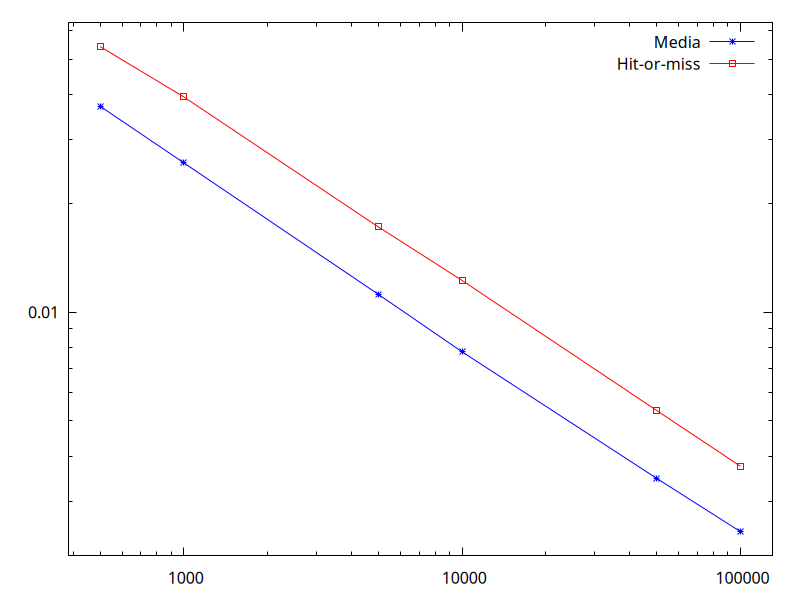

Lezione 10 e 11: Metodi Montecarlo
A.A. 2023−2024
Leonardo Carminati
Maurizio Tomasi
[La pagina con la spiegazione originale degli esercizi si trova qui: https://labtnds.docs.cern.ch/Lezione10-11/Lezione1011/.]
In questa lezione familiarizzeremo con l’utilizzo di tecniche numeriche basate su numeri casuali. Per prima cosa costruiremo un semplice generatore di numeri casuali. Lo utilizzeremo quindi per generare numeri che seguano diverse distribuzioni di probabilità (uniforme, esponenziale e Gaussiana). Come applicazione utilizzeremo la generazione di numeri casuali per calcolare numericamente integrali mono e multi-dimensionali. Nella prossima lezione utilizzeremo un generatore di numeri casuali per simulare il comportamento di un apparato sperimentale.
Esercizio 10.0 - Generatore di numeri casuali (da consegnare)
In questo esercizio proveremo a costruire un generatore di numeri casuali e a studiarne il comportamento. Scriveremo un programma che produca quattro istogrammi contenenti ciascuno 10 000 numeri pseudo-casuali estratti dalle seguenti distribuzioni:
- una distribuzione uniforme tra 5 e 10.
- una distribuzione esponenziale tra 0 e +∞ con costante \lambda=1.
- una distribuzione gaussiana centrata in 1 e larghezza 1 con il metodo di Box-Muller.
- una distribuzione gaussiana centrata in 1 e larghezza 1 con il metodo accept-reject.
Per risolvere questo esercizio si può seguire lo schema seguente:
Scrivere una classe
RandomGenper la generazione di numeri casuali. La classe dovrà avere un costruttore che accetti un seed di input e si faccia carico di inizializzare i parametri del generatore ai valori nominali. La classe dovrà inoltre contenere un metodo che implementi un generatore lineare congruenziale di base e tutti i metodi necessari per le distribuzioni richieste.Preparare un semplice
mainper provare le funzionalità della classeRandomGen, producendo quattro istogrammi per le distribuzioni indicate sopra.
Header file della classe
RandomGen
#pragma once
class RandomGen {
public:
RandomGen(unsigned int seed);
void SetA(unsigned int a) { m_a = a; }
void SetC(unsigned int c) { m_c = c; }
void SetM(unsigned int m) { m_m = m; }
double Rand();
double Unif(double xmin, double xmax); // distribuzione uniforme
double Exp(double mean); // distribuzione esponenziale
double Gaus(double mean, double sigma); // distribuzione gaussiana (Box-Muller)
double GausAR(double mean, double sigma); // distribuzione gaussiana (Accept-Reject)
private:
unsigned int m_a, m_c, m_m;
unsigned int m_seed;
};Il costruttore deve accettare un unsigned int come
seed di input e inizializzare i parametri del generatore ai
valori nominali m_a = 1664525,
m_c = 1013904223 e m_m = 1U << 31.
main per
il test del generatore RandomGen
Un possibile main per provare il generatore appena
costruito è indicato di seguito:
#include <iostream>
#include <vector>
#include "randomgen.h"
#include "gplot++.h"
using namespace std;
int main() {
// Implementate questa funzione per verificare che i vostri
// generatori funzionino; fate riferimento alla pagina
//
// https://ziotom78.github.io/tnds-notebooks/lezione10/
//
// per sapere quali numeri usare negli assert
test_random_numbers();
RandomGen myGen{1};
vector<double> samples(10000); // Usare parentesi tonde () e non graffe {} qui!
for(int k{}; k < (int) samples.size(); k++) {
samples[k] = myGen.Unif(5, 10);
// Stampa i primi 10 valori per controllo
if (k < 10)
cout << samples[k] << endl;
}
const int nbins{100}; // Numero di barre nell'istogramma
Gnuplot plt{};
plt.redirect_to_png("uniforme.png");
// Per produrre i quattro grafici nella stessa immagine, secondo
// una matrice 2×2, si può usare il comando
//
// plt.multiplot(2, 2);
//
// e poi invocare i comandi qui sotto quattro volte: ogni volta
// che si invoca `plt.show()`, Gnuplot avanza al plot successivo
plt.set_xrange(4, 11);
plt.set_xlabel("x [AU]");
plt.set_ylabel("Numero di campioni");
plt.histogram(samples, nbins);
plt.show();
}Il programma usa gplot++, installabile con i soliti comandi descritti qui.
Se eseguite il programma, otterrete questo grafico, non molto incoraggiante:

I dati non sembrano affatto essere distribuiti uniformemente! Il
problema è che per default Gnuplot sceglie una scala per l’asse y che non parte da zero, e questo distorce
l’aspetto del grafico. Dobbiamo quindi forzarlo a partire da zero con il
metodo plt.set_yrange:
// Nel main visto sopra
// …
plt.set_xrange(4, 11);
plt.set_yrange(0, NAN);
// …Passare NAN come estremo superiore indica a Gnuplot che
ci va bene che sia lui a calcolare il valore ottimale per l’estremo
superiore, perché a noi interessa indicare solo l’estremo inferiore. Il
risultato diventa questo:

Se invece volete usare ROOT, aggiungete in coda al main
qualcosa di simile:
TApplication app{"app", 0, 0};
TH1F unif{"Uniforme", "Uniforme", 100, 4, 11};
for(double sample : samples) {
unif.Fill(samples);
}
TCanvas can2("Uniforme", "Uniforme") ;
can2.cd();
unif.GetXaxis()->SetTitle("x [AU]");
unif.GetYaxis()->SetTitle("Numero di campioni");
unif.Draw();
app.Run();Seguono alcuni suggerimenti.
Generatore Lineare congruenziale
I generatori lineari congruenziali generano una sequenza di interi pseudocasuali utilizzando la seguente formula:
n_i = \mathrm{mod}(a \cdot n_{i - 1} + c, m)
Quindi è necessario tenere in memoria il valore del numero intero generato al passaggio precedente. Alla prima iterazione, n_0 = \text{seed}.
Per ottenere un numero floating point uniformemente distribuito tra 0 e 1 (con 1 escluso) è sufficiente richiedere: d_i = n_i / m.
Ricordiamo che in C++ l’operazione mod può essere eseguita con
l’operatore %, che ritorna il resto della divisione
(intera), per cui
7 % 5 = 2Generatore esponenziale
Per generare numeri pseudo-casuali secondo la densità di probabilità esponenziale p(x) = \begin{cases} \lambda e^{-\lambda x},&\qquad(x \geq 0)\\ 0&\qquad(x < 0) \end{cases} si può facilmente invertire la funzione cumulativa di p(x): è il metodo della funzione inversa. A partire da un numero y estratto secondo la distribuzione uniforme tra 0 e 1, il numero x = - \frac1{\lambda} \log(1 - y) è distribuito proprio come la distribuzione esponenziale p(x).
Metodo di Box–Muller
Il metodo di Box-Muller permette di estrarre numeri secondo una densità di probabilità gaussiana, sfruttando il metodo della funzione inversa bidimensionale. Siano x e y due variabili indipendenti distribuite normalmente (Gaussiana con media 0 e sigma 1). L’espressione della loro distribuzione di probabilità (PDF) in due dimensioni è P(x,y) = \frac12 \exp\left(-\frac{x^2 + y^2}2\right).
Passando alle coordinate polari: \begin{aligned} x &= r \cos\theta,\\ y &= r \sin\theta, \end{aligned} si ha P(R, \theta) = \frac12 \exp\left(- \frac{r^2}2\right). Se calcoliamo l’integrale di tale PDF per r \in [0, R] e \theta \in [0, \Theta], otteniamo F(R, \Theta) = \frac\Theta\pi \left[1 - \exp\left(-\frac{R^2}2\right)\right], Definendo s e t come due variabili casuali distribuite uniformemente in [0,1], abbiamo \begin{aligned} R &= \sqrt{-2 \log (1 - s)},\\ \Theta &= 2\pi t, \end{aligned} per cui due variabili x e y distribuita normalmente possono essere generate a partire da una coppia s e t distribuita uniformemente in [0,1], secondo la formula \begin{aligned} x &= \sqrt{-2\log s} \cdot \cos{2\pi t},\\ y &= \sqrt{-2\log s} \cdot \sin{2\pi t},\\ \end{aligned} Se ci limitiamo per comodità a considerare solo una delle due, possiamo generalizzare al caso di variabile x distribuita gaussianamente con media \mu e larghezza \sigma: x = \mu + \sigma\cdot \sqrt{-2\log s} \cdot \cos{2\pi t}.
Qui sotto trovate una implementazione di tale metodo:
double RandomGen::Gaus(double mean, double sigma) {
double s{Rand()};
double t{Rand()};
double x{sqrt(-2 * log(s)) * cos(2 * M_PI * t)};
return mean + x * sigma;
}Si noti che tecnicamente dati due numeri s e t possiamo generare due numeri x e y distribuiti gaussianamente. Nel nostro esempio ne consideriamo uno soltanto per comodità di scrittura codice, non certo per efficienza!
Metodo Accept-Reject
Il metodo accept-reject può essere utilizzato per generare numeri casuali distribuiti secondo una qualsivoglia forma funzionale. Consideriamo di voler generare numeri nell’intervallo [a, b] secondo la distribuzione f(x) in figura:

Il metodo si basa sulla generazione di una coppia di numeri x \in [a, b], y \in [0, M] dove M è un numero maggiore del massimo valore assunto da f(x) nell’intervallo [a,b]: f(x) \leq M\,quad \forall x \in [a, b]. La coppia (x, y) può essere facilmente generata a partire da due numeri s e t generati uniformemente in [0,1] usando le formule
\begin{aligned} x &= a + (b-a)\cdot s,\\ y &= M \cdot t. \end{aligned}
Generata la coppia (x, y), si valuta
quindi f(x) e si accetta x se y<
f(x), altrimenti si ripete la procedura. Così facendo si avrà un
maggior numero di punti generati laddove f(x) assume valori più grandi. Potete pensare
di scrivere un metodo accept-reject specifico per la gaussiana o
pensarne uno più generale che per esempio accetti una generica
FunzioneBase come input.
Esercizio 10.1 - Verifica del Teorema del Limite Centrale (da consegnare)
Una applicazione molto interessante dell’estrazione di numeri casuali è la verifica del teorema del limite centrale. Per fare questo possiamo generare una serie di numeri casuali uniformemente distribuiti in [0,1] e calcolare la somma eseguita su un numero N di elementi consecutivi della serie generata. Calcolare la varianza della serie di numeri generata e della serie delle somme. Verificare come questa scala con N. Si possono pensare a due versioni di questo esercizio:
Semplice: passare da riga di comando il numero N di elementi da sommare. Creare due istogrammi che contengano la distribuzione dei numeri generati e la distribuzione delle somme di N elementi. Verificare come cambia la distribuzione delle somme al variare di N provando ad eseguire il codice varie volte con diversi valori di N.
Completo: il codice prepara le distribuzioni (istogrammi) delle somme di N elementi con N che va da 1 a 12. Per ogni N, il programma calcola la varianza della distribuzione e genera un plot finale della varianza in funzione di N.
In entrambi i casi, un numero di campioni maggiore di 10 000 dovrebbe andare bene.
Il Teorema del Limite Centrale
I teoremi del limite centrale sono una famiglia di teoremi di convergenza debole nell’ambito delle teoria delle probabilità. Per tutti vale l’affermazione che la distribuzione di probabilità della somma (normalizzata) di un gran numero di variabili casuali tende ad una data distribuzione regolare (attrattore), che di norma è la Gaussiana o la Lorenziana.
Nel nostro caso, verificheremo che la somma di N variabili aleatorie x_i indipendenti e identicamente distribuite con media \mu e varianza \sigma^2 < \infty tende a distribuirsi come una variabile casuale gaussiana con media pari a N\mu e varianza N\sigma^2, al tendere di N a infinito.
Risultati attesi
L’output del programma potrebbe essere una coppia di grafici: nel primo una panoramica delle dodici distribuzioni di somme:
Nel secondo grafico, la relazione tra il numero di elementi sommati N = 1\ldots 12 e la deviazione standard (oppure la varianza):

Suggerimento: non implementate tutto nel main, ma
inserite il codice che riempie il vettore di 10 000 elementi in una
funzione separata, che può stare benissimo nello stesso file del
main:
void compute_sums(
RandomGen & rng, // Generatore da usare
int numbers_to_add, // Valore di N, tra 1 e 12
std::vector<double> & result // Vettore di elementi da riempire
) {
// Inserite qui l'implementazione: deve iterare su
// tutti gli elementi di `result`, e in ognuno di essi
// inserire la somma di N valori restituiti da
// rng.Uniform(0.0, 1.0), dove N è la variabile `numbers_to_add`
}Nel main quindi il codice sarà semplice da scrivere e
soprattutto da leggere:
// Assumo qui di usare Gnuplot, ma usando ROOT il concetto è uguale
Gnuplot plt1{};
// Rendi la figura più grande del normale: dovrà contenere molti
// istogrammi!
plt1.redirect_to_png(plot_file_name, "1280,1024");
// Quattro righe, tre colonne (12 istogrammi in totale)
plt1.multiplot(4, 3);
RandomGen rng{1};
// Alloco già lo spazio per 100 000 elementi, e lo faccio
// una volta sola *prima* del ciclo `for`: così il codice
// sarà rapidissimo
std::vector<double> result(100'000);
for(int N{1}; N <= 12; ++N) {
compute_sums(rng, N, result);
// Qui uso "fmtlib.h" per formattare l'etichetta dell'istogramma
plt1.histogram(result, 100, fmt::format("N = {}", N));
plt1.show();
}Esercizio 10.2 - Calcolo di integrali con metodi Montecarlo (da consegnare)
Studiamo in questo esercizio il comportamento delle tecniche Montecarlo per il calcolo numerico di un integrale mono-dimensionale.
Calcolare 10 000 volte il valore dell’integrale di \sin(x) su [0, \pi] utilizzando il metodo della media con N = 100 punti e fare un grafico (istogramma) della distribuzione dei valori ottenuti.
Estendere il punto precedente calcolando 10 000 volte il valore dell’integrale di \sin(x) su [0, \pi] utilizzando il metodo della media a N punti, con N pari a 100, 500, 1000, 5000, 10 000 punti. Per ogni valore di N produrre il grafico della distribuzione dei 10 000 valori ottenuti.
Stimare l’errore sul calcolo dell’integrale a 100, 500, 1000, 5000, 10 000 punti come deviazione standard dei 10 000 valori calcolati per ogni N. Far un grafico di questo errore in funzione di N.
Assumendo che l’andamento dell’errore sia noto (del tipo k / \sqrt{N}), si determini quanti punti sono necessari per ottenere una precisione di 0.001. Si ripeta lo stesso lavoro con il metodo hit-or-miss.
Alcune osservazioni per lo svolgimento dell’esercizio:
Per il calcolo di integrali con metodi Montecarlo si può decidere di scrivere una nuova classe dedicata o estendere la classe
Integraldella lezione 7. Notate che in questo caso la nuova classe dovrà avere un generatore di numeri casuali come membro.Poiché il calcolo degli integrali con N molto elevato potrebbe richiedere un certo tempo, diventa utile spezzare il
mainin duemainseparati: il primo calcola gli integrali e li salva in diversi file di testo (uno per ogni valore di N), mentre il secondo legge i files scritti dal primo e li analizza. In questo modo possiamo agevolmente ripetere molte volte l’analisi dei dati senza dover ricalcolare ogni volta gli integrali.
La classe IntegraleMC
Come al solito possiamo pensare ad una interfaccia generica
IntegraleMC dalla quale derivano le classi concrete
IntegraleMedia e IntegraleHoM:
#pragma once
class IntegraleMC {
public:
// Take the seed
IntegraleMC(unsigned int seed) : m_myrand{seed}, m_errore{}, m_punti{} {}
virtual ~IntegraleMC() {}
virtual double Integra(const FunzioneBase & f, double inf, double sup, int punti, double fmax) = 0;
double GetErrore() const { return m_errore; }
int GetN() const { return m_punti; }
private:
RandomGen m_myrand;
double m_errore;
int m_punti;
};
class IntegraleMedia() : public IntegraleMC {
public:
double Integra(const FunzioneBase & f, double inf, double sup, int punti, double fmax) override {
// Implementazione qui
}
};Alcune osservazioni:
Negli anni passati, il codice proposto sopra da Carminati dichiarava all’interno di
IntegraleMCun puntatore aRandomGen(ossia,m_myrandera dichiarato comeRandomGen * m_myrand), e questo obbligava ad invocarenewnel costruttore edeletenel distruttore, nonché a definire un costruttore di copia e un /move constructor/. Quest’anno evitiamo di usare il puntatore, e quindi il codice è molto più semplice e più consono alla moderna programmazione C++.Per salvare la struttura delle classi virtuale/concreta siamo stati costretti ad aggiungere il campo
fmaxanche adIntegraleMedia, anche se non necessario: serve infatti soltanto per il metodo /hit-or-miss/.
Un vettore di istogrammi in ROOT
Per chi usa ROOT, in alcuni casi può essere comodo conservare una
serie di istogrammi riempiti in un ciclo. Una possibilità è quella di
creare puntatori a istogrammi e conservarli in un
vector<TH1F*> per un eventuale uso seguente. Un
esempio è tratteggiato qui sotto, in caso sia utile:
vector<TH1F*> vhistos;
for(int k{}; k < (int) cases.size(); k++ ) { // ciclo sui casi da studiare
TH1F* h{new TH1F( ... )}; // costruzione istogramma
for (int j{}; j < n ; j++ )
h->Fill(...) ; // riempimento istogramma
vhistos.push_back(h); // conserviamo i puntatori
}
for(int k{}; k < (int) cases.size(); k++) {
// ...
vhistos[k]->Draw();
// ...
}Calcolo di integrali con il metodo della media
Come discusso a lezione, il metodo della media consiste nel valutare la media delle valutazioni della funzione f(x) in un set di N punti distribuiti uniformemente tra a (minimo estremo di integrazione) e b (massimo estremo integrazione). La stima dell’integrale si ottiene poi dalla seguente formula: \int_a^b f(x)\,\mathrm{d}x \approx (b - a) \frac{\sum_{n=1}^N f\bigl(x_n\bigr)}N.
Calcolo di integrali con il metodo hit-or-miss
Il metodo hit-or-miss si basa sulla generazione di una coppia di numeri x \elem [a, b] e y \elem [0, f_\text{max}], dove f_\text{max} è un numero maggiore del massimo valore assunto da f(x) nell’intervallo [a, b]. Generata la coppia (x, y), si incrementa un contatore N_\text{tot} e si valuta quindi f(x): se y < f(x), allora si incrementa anche il contatore N_\text{hit}. La procedura viene ripetuta fino a che il numero di estrazioni è pari al valore di N_\text{max} richiesto. La stima dell’integrale si ottiene poi dalla seguente formula:
\int_a^b f(x)\,\mathrm{d}x \approx (b - a) f_\text{max}\frac{N_\text{hit}}{N_\text{tot}}.
Risultati attesi
Siccome il programma deve fare molti calcoli, vi consiglio di fornire
qualche feedback all’utente usando la libreria fmtlib:
const int num_of_estimates{1000};
const std::vector num_of_points_list{500, 1000, 5000, 10'000, 50'000, 100'000};
Gnuplot plt{};
plt1.redirect_to_png("es10.3_histograms.png", "800,1600");
assert( == 6);
// Useremo 2 colonne per mostrare l'istogramma della media
// e di hit-or-miss, e tante righe quanti sono i valori in
// "num_of_points_list"
plt1.multiplot(num_of_points_list.size(), 2);
// Itera `num_of_points` su tutti i valori di `num_of_points_list`:
// prima num_of_points = 500, poi num_of_points = 1000, poi etc.
for(auto num_of_points: num_of_points_list) {
// Questo è un feedback da dare all'utente. Notare che usiamo
// `stderr`, così il messaggio viene stampato subito!
fmt::println(stderr, "N = {}", num_of_points);
std::vector<double> estimates_mean(num_of_estimates);
std::vector<double> estimates_hom(num_of_estimates);
// Esegue molte volte il calcolo dell'integrale per vedere la
// variabilità dei risultati
for(int k{}; k < (int) estimates_mean.size(); ++k) {
estimates_mean.at(k) = integral_mean(rng, f_sin, 0.0, M_PI, num_of_points);
estimates_hom.at(k) = integral_hom(rng, f_sin, 0.0, M_PI, 1.0, num_of_points);
}
// Mette nella colonna di sinistra l'istogramma delle stime
// con il metodo della media…
plt.histogram(estimates_mean, 20,
fmt::format("Media, N = {}", num_of_points));
plt.set_xrange(1.8, 2.2);
plt.show();
// …e nella colonna di destra quello con hit-or-miss
plt.histogram(estimates_hom, 20,
fmt::format("Hit-or-miss, N = {}", num_of_points));
plt.set_xrange(1.8, 2.2);
plt.show();
}Le distribuzioni attese degli integrali per i diversi valori di N dovrebbero avere questo aspetto:

L’andamento dell’errore nei due casi dovrebbe invece essere così:

Attenzione: fareste meglio a stimare l’errore come la deviazione standard della distribuzione, anziché contare sul fatto che sapete che \int_0^\pi\sin x\,\mathrm{d}x = 2, perché in questo modo il codice che scrivete per questo esercizio sarà più facile da riutilizzare il giorno dell’esame (in cui non è affatto detto che voi saprete il valore degli integrali che dovete calcolare…)!
Esercizio 10.3 - Calcolo di integrali multidimensionali con metodi Montecarlo (facoltativo)
Provare a risolvere il seguente integrale utilizzando per esempio il metodo della media:
I = \int_1^2\int_1^2\left( \frac5{x^2}\cos(4y)\sin(7x) + 10 \right)\,\mathrm{d}x\,\mathrm{d}y,
Suggerimento: si potrebbe costruire una classe
FunzioneScalareBase astratta da cui la funzione integranda
erediti. La classe FunzioneScalareBase avrà un metodo
virtuale puro
// `n` è il numero di dimensioni del dominio:
// · se f = f(x), allora n=1
// · se f = f(x, y), allora n=2
// · se f = f(x, y, z), allora n=3
// etc.
template<size_t n>
class FunzioneScalareBase<n> {
public:
// …
// `input` è un array contenente N parametri; in quest'esercizio, n=2 e input=(x, y)
virtual double Eval(const array<double, n> & input) const=0;
};Alla classe che calcola l’integrale si dovrà aggiungere un metodo dedicato del tipo
template<size_t n>
double Media(FunzioneScalareBase<n> & f,
const array<double, n> & inf,
const array<double, n> & sup,
int punti);Integrando la funzione sopra con 100 000 punti, si dovrebbe ottenere come risultato 10.241 ± 0.004.
Esercizio 10.4 - Errore nel caso di integrali multimensionali (facoltativo)
Provare a ripetere le consegne dell’esercizio 10.2 applicate all’integrale multidimensionale dell’esercizio 10.3. In questo modo si può facilmente verificare che la legge con cui scala l’errore è indipendente dalla dimensione dell’integrale.
Qualche approfondimento su generatori di numeri casuali in C++11
Nel C++ 11 è stata inserita una libreria per la generazione di numeri casuali: si veda per esempio qui. Provate a dare un’occhiata a questo codice per trovare un esempio su come utilizzare questa libreria e su come usare le librerie di ROOT ( si faccia riferimento alla referenza).
Errori comuni
Come di consueto, elenco alcuni errori molto comuni che ho trovato negli anni passati correggendo gli esercizi che gli studenti hanno consegnato all’esame:
Stranamente, un certo numero di studenti non segue quanto richiesto per l’esercizio 10.2 ed inventa metodi alternativi (spesso molto più lenti) per stimare l’errore. Cercate di attenervi a quanto richiesto nel testo, perché si tratta di un approccio risolutivo che si ripropone spesso nei temi d’esame.
Sempre nell’esercizio 10.2, imparate ad usare giudiziosamente i cicli
forper studiare i vari casi, anziché usare spietatamente il copia-e-incolla!Come già detto a proposito della lezione 8, se il vostro programma richiede una serie di parametri da linea di comando, assicuratevi di documentarli e di permettere all’utente di avviare il programma con
make esegui.